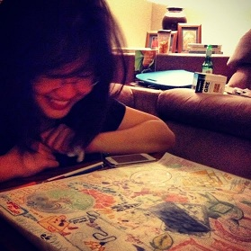

This is my silly website.
Please enjoy.
This was supposed to be a profile page. But I must have missed something.
Oh well.
Instead of that, all I have to offer is a silly website in which I talk about nothing in particular.
Oh, and cake.
The picture below isn't me, but you can pretend it is.
